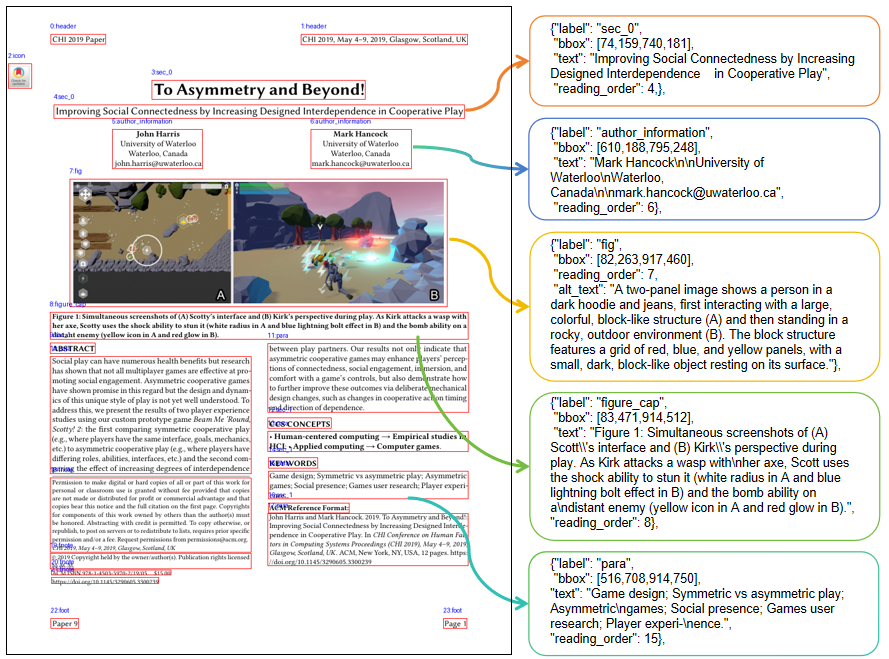

Abstract
Document understanding systems are typically evaluated as separate components via layout analysis, optical text recognition, reading-order prediction, and image captioning. This separation leaves scientific figures, captions, and visual semantics weakly connected, and fails to measure whether a model can produce a single page-level parse that is both structurally faithful and semantically accessible. We introduce Read-Parse-Describe, a unified dataset for document parsing with visual element description generation. Given a page image, models are required to output an ordered list of layout elements containing bounding boxes, semantic labels, reading-order indices, recognized textual content, and alternative text descriptions for visual elements. The benchmark is built from 2,402 documents, comprising 18,164 continuous pages, 125,218 layout elements, and 11,338 visual instances. Besides, we further propose a plug-and-play space-awareness enhancer that reuses multi-layer visual features and injects grid-aware spatial guidance into vision-language tokens for layout-aware generation. Experiments across end-to-end VLMs and pipeline parsers show that existing systems still struggle to jointly recover reading order and visual semantics, while our enhanced model achieves strong joint performance. These results highlight the need to move beyond isolated document parsing modules toward unified models that jointly read, parse, and describe complex documents.
Read-Parse-Describe
RPD contains open-access ACM scientific papers with interleaved text, equations, tables, figures, and captions. Given a page image, a parser predicts an ordered list of localized elements with recognized content and descriptions for applicable visual objects.
The corpus retains the first eight pages of each paper, or all pages of shorter papers, and uses 23 semantic layout labels. Each element record connects geometry, category, reading position, and applicable text, table, caption, and visual-description fields. The same output contract supports end-to-end models and modular parsers.
SARA
The Spatial Alignment Residual Adapter reuses intermediate visual encoder features and aligns them with the native merged tokens for each crop. A learned projection and crop-aware pooling produce spatial guidance that is injected through a gated residual connection.

Multi-layer visual features are aligned to crop grids and added to the merged visual tokens.
Parsing Examples

Comparison of element mappings for the same scientific-document page.
Parsing Results
The comparison reports localization F1 and mIoU, OCR and reading-order similarity, and METEOR and BERTScore for visual descriptions. Zero-shot, full fine-tuning, LoRA, and SARA are shown as separate evaluation settings.
| Model | Setting | Trainable | F1 | mIoU | OCR | RO | METEOR | BERTScore |
|---|---|---|---|---|---|---|---|---|
| ChatGPT-5.6 | Zero-shot | — | 0.7489 | 0.7781 | 0.9448 | 0.8967 | 0.3793 | 0.9004 |
| Gemini 3.1 Pro | Zero-shot | — | 0.7421 | 0.8551 | 0.9633 | 0.8337 | 0.3785 | 0.8961 |
| Qwen3.5-2B | Full FT | 1881.83M | 0.7336 | 0.8350 | 0.9408 | 0.9628 | 0.3741 | 0.8928 |
| Gemma4-E4B | Full FT | 7463.01M | 0.9358 | 0.8836 | 0.9452 | 0.9628 | 0.3047 | 0.8821 |
| DeepSeek-OCR | Full FT | 2937.36M | 0.9644 | 0.9492 | 0.9679 | 0.9825 | 0.3998 | 0.8968 |
| Dolphin-v2 | Full FT | 3085.93M | 0.9826 | 0.9588 | 0.9751 | 0.9857 | 0.3396 | 0.8838 |
| Gemma4-E4B + LoRA | LoRA | 103.82M | 0.7687 | 0.7238 | 0.9164 | 0.9451 | 0.2871 | 0.8753 |
| Qwen3.5-2B + LoRA | LoRA | 48.37M | 0.7004 | 0.6845 | 0.9673 | 0.9304 | 0.3586 | 0.8652 |
| Gemma4-E4B + SARA | SARA | 158.82M | 0.9437 | 0.9136 | 0.9474 | 0.9288 | 0.3009 | 0.8746 |
| Qwen3.5-2B + SARA | SARA | 83.99M | 0.9189 | 0.8919 | 0.9636 | 0.9774 | 0.3834 | 0.8946 |
Scores use the reported 0–1 scale. Trainable counts refer to the listed configuration. Dashes indicate unavailable fields or non-applicable training entries.
On Qwen3.5-2B, SARA raises F1 from 0.7336 to 0.9189 and mIoU from 0.8350 to 0.8919 relative to full fine-tuning. Localization also improves on Gemma4-E4B, while its reading-order and description scores decrease. Comparisons with LoRA use different trainable-parameter budgets.
Annotation
Structural fields are manually inspected and corrected after parser initialization. Gemini 3 Pro generates initial visual descriptions, and Gemini 3 Flash scores them using a factuality, completeness, and instruction-adherence rubric. Descriptions scoring below 4 are routed to human refinement.
A 200-sample audit yields 194 exact agreements between human and LLM rubric scores. The audit covers revised descriptions and does not estimate the quality of all retained seeds. Reference-based description scores do not directly establish factual completeness or accessibility utility.
Dataset and Model
The dataset is released on Hugging Face as page images and ImageFolder-style metadata, with train, validation, and test partitions. Serialized annotations associate each page with its layout and content records.
The Qwen3.5-2B release includes a first-stage checkpoint, second-stage LoRA weights, the spatial enhancer, and training, inference, and evaluation scripts.
BibTeX
@inproceedings{chen2026rpd,
title = {Read, Parse, Describe: Unified Document Parsing with Visual Element Description Generation},
author = {Chen, Yuheng and Chen, Yufan and Cai, Zhuojun and Liu, Ruiping and
Zheng, Junwei and Wei, Jiale and Wen, Di and Fan, Weijia and
Peng, Kunyu and Zhang, Jiaming and Stiefelhagen, Rainer},
booktitle = {Advances in Neural Information Processing Systems},
year = {2026},
url = {https://yufanchen96.github.io/RPD/}
}